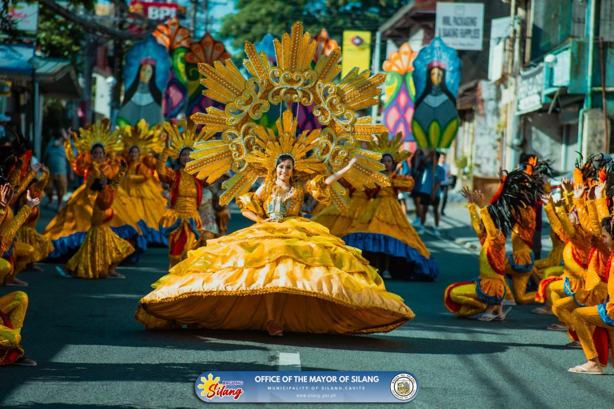
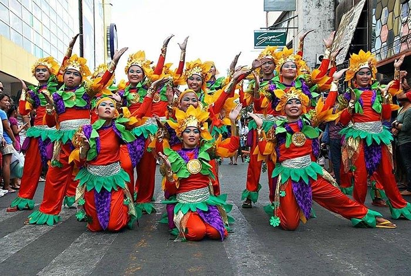
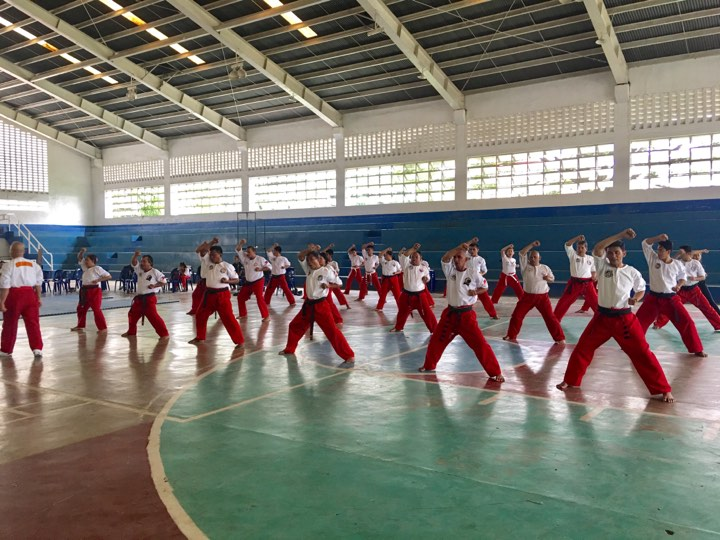
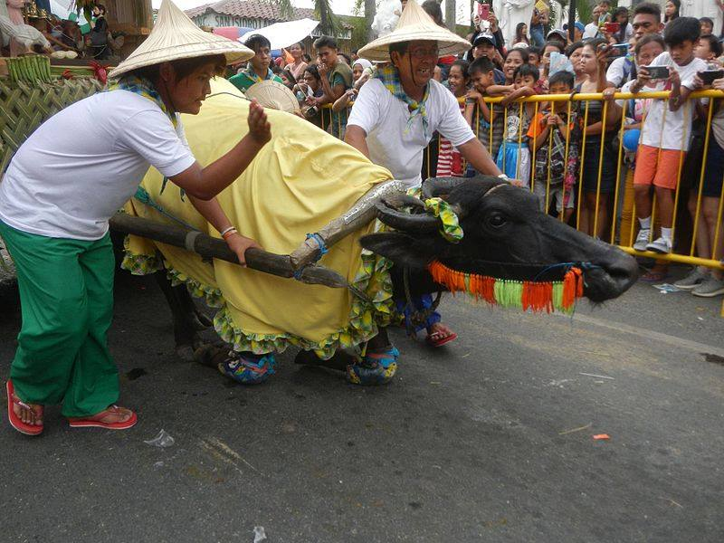
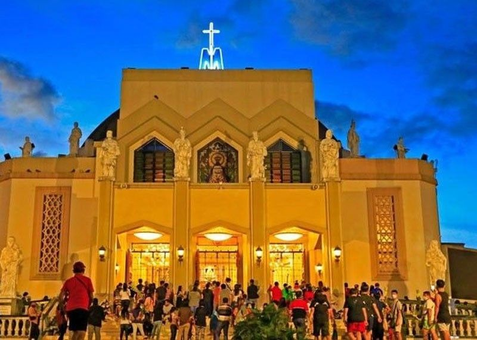

What makes Rizal festivals unique?
Rizal’s celebrations are a blend of artistry, devotion, and local history. Each event puts community pride on full display through vibrant costumes, street performances, and cultural rituals.
Art & Pageantry
Witness incredible craftsmanship in giant nipa paper sculptures, vibrant floats, and theatrical street dances.
Faith & Tradition
Join pilgrimage processions and religious rituals that have been honored by local communities for generations.
Harvest Celebrations
Enjoy harvest-themed festivals that champion the province’s agricultural heritage and local produce.

Higantes Festival
Angono’s grand November celebration honors San Clemente with towering papier-mâché giants, vibrant street parades, and evening parties.
Location: Angono
Month: Late November (around Nov 23)
Highlight: Giant puppets, folk music, and local art bazaars

Sumilang Festival
Antipolo marks its fiesta with floral floats, rice cake contests, mango tastings, and a colorful street dance celebrating harvest bounty.
Location: Antipolo
Month: Early May
Highlight: Local harvest treats, kasoy delicacies, and family-friendly parades

Hane Festival
Tanay’s town fiesta in April blends agricultural tributes with street performances, traditional music, and a ceremonial blessing of crops.
Location: Tanay
Month: Mid-April
Highlight: Folk costumes, harvest rituals, and evening festivities

Sikaran Festival
Baras celebrates the Filipino kicking sport with live sikaran bouts, cultural demonstrations, and special exhibitions of local martial arts.
Location: Baras
Month: June
Highlight: Martial arts matches, youth clinics, and heritage performances

Hampang Kalabaw
Morong’s October festival honors farmers with water buffalo races, playful buffalo parades, and community contests highlighting rural life.
Location: Morong
Month: Mid-October
Highlight: Buffalo races, mud parades, and agricultural pageantry

Alay Lakad
For Holy Week, thousands of pilgrims walk in candlelit procession to Antipolo Cathedral, offering prayers and flowers in a moving display of faith.
Location: Antipolo
Month: April (Good Friday)
Highlight: Candlelit pilgrimage, devotional prayers, and church rituals